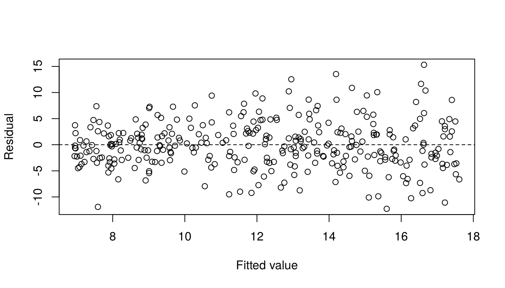
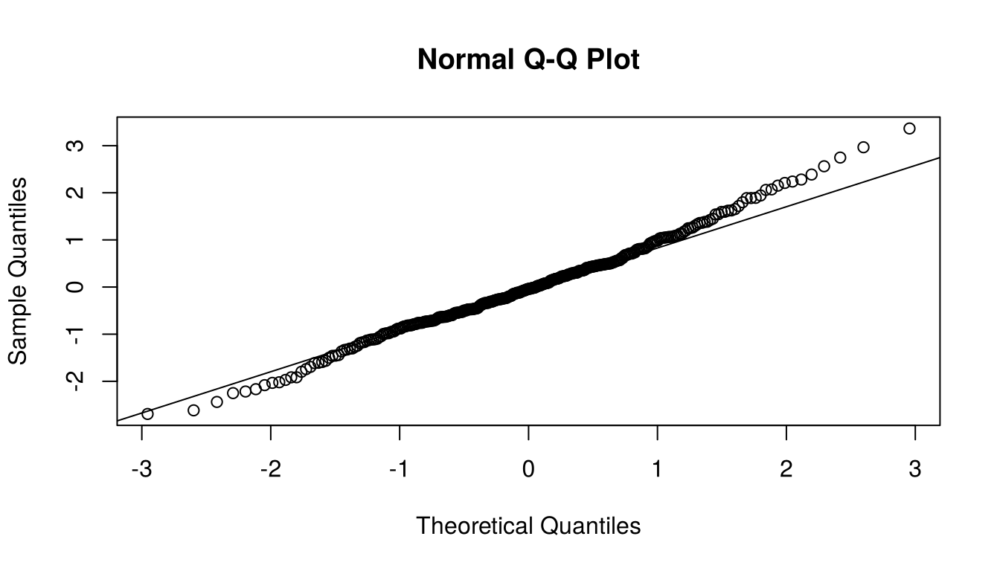

ventures <- read.csv("data/qm-intermediate-mock-exam.csv")
ventures$digital <- factor(ventures$digital, levels = c("No", "Yes"))Mock Exam: QM Intermediate
This mock exam covers all six lectures of the course. It has 100 points, so your test score is
\[ \text{test score} = \frac{\text{points earned}}{10}, \]
on a scale from 1.00 to 10.00, with two decimals. A score below 1.00 counts as 1.00. The lecturer enters this test score in Osiris. Osiris then rounds it to a whole or half grade for your final course grade. A score from 5.50 to 5.74 becomes 6.0, and a score from 5.25 to 5.49 becomes 5.0. For example, 72 points give a test score of 7.20 and a final grade of 7.0. You pass with a final grade of 6.0 or higher, that is, with 55 points or more.
You take the Intermediate exam in TestVision. It lasts 120 minutes. You may use RStudio, Excel, the calculator in TestVision, a simple pocket calculator, and scrap paper. The practice exam in TestVision appears in your own TestVision account once the lecturer publishes it. You log in with your university account. There is no separate link. General information about TestVision for students is on the university page about TestVision.
You receive the QM Intermediate Code Sheet at the exam. Keep it open while you work on this mock exam.
Use 120 minutes as the practice time limit, as in the exam.
How this mock exam works
This mock exam gives an impression of what an exam in this course can look like. You download a data file, you run R yourself, and you type your answers.
All parts are open questions. You type a number with your calculation, or one to three sentences. An answer without a calculation or an explanation gets no points, unless the part asks only to report or to state something.
You do not have to simulate data, and you do not have to reproduce a simulation. The practice data are invented. The code that made them is in a collapsed box at the end of this page. It is there only so that anyone can check how we made the data. It is not part of the exam.
A part that starts with “In R:” needs code that you write and run yourself. Its answer is not printed in the question. For these parts, copy the R code that you used into your answer, and type the numbers that the part asks for. You can answer all other parts from your own results, from printed output, or with a short calculation. You may use R as a calculator everywhere.
Question 3 shows an R output of a colleague, and Question 4 shows a regression table in the layout of a research paper. You interpret them. Question 6 shows an answer of an AI assistant. You assess it.
All tests in this course are two-sided. Use a 5% significance level. Some parts that build on an “In R:” part print stand-in values. Use them if your code does not run.
Dataset used throughout
The practice data are invented. Treat them as a simple random sample of 320 young ventures from a business registry. One row is one venture. The data are observational: none of the predictors was assigned by chance.
growth_pct: growth of annual sales compared with the year before, in percent. A value of 12 means that sales were 12% higher than in the year beforemarketing_10k: annual marketing spending, in €10,000s. The values run from 0.25 (€2,500) to 7.99 (€79,900)experience_years: prior industry experience of the lead founder, in years, from 0 to 18team_size: number of current team members, from 1 to 10digital:Nofor a mainly physical offering andYesfor a mainly digital offering.Nois the reference categoryspend_c:marketing_10k - 4, marketing spending centred at €40,000. This is close to the sample mean of about €40,400.
The population is the set of ventures in this registry. The data do not measure later survival or market conditions.
Download qm-intermediate-mock-exam.csv, save it in the folder data of your R project, and load it with the code below. If you save the file directly in your project folder, write "qm-intermediate-mock-exam.csv" as the file name.
Question 1: Simple regression (13 points)
A founder asks whether ventures that spend more on marketing grow faster. The outcome is growth_pct and the predictor is marketing_10k.
In R: load the data and check that the file has 320 rows. Report the mean and the largest value of
growth_pct. (2 points)In R: fit the simple regression of
growth_pctonmarketing_10k. Report the intercept and the slope. (2 points)Stand-in values, if your code does not run: intercept 6.6 and slope 1.4. Use them in parts 3 and 4.
Interpret the slope in one sentence. (4 points)
In R: use
predict()to calculate the fitted growth of a venture that spends €50,000 on marketing. The actual sales growth of this venture is 11%. Calculate its residual. State what the sign of the residual means. (5 points)
Model answer
Code
# Part 1
ventures <- read.csv("data/qm-intermediate-mock-exam.csv")
ventures$digital <- factor(ventures$digital, levels = c("No", "Yes"))
nrow(ventures)[1] 320mean(ventures$growth_pct)[1] 12.17166max(ventures$growth_pct)[1] 31.94# Part 2
simple_model <- lm(growth_pct ~ marketing_10k, data = ventures)
coef(simple_model) (Intercept) marketing_10k
6.598158 1.378342 # Part 4
fit_50k <- predict(simple_model, newdata = data.frame(marketing_10k = 5))
fit_50k 1
13.48987 11 - fit_50k 1
-2.489868 Answers
- The file has 320 rows. The mean sales growth is 12.172%. The largest sales growth is 31.94%.
- Intercept 6.598 and slope 1.378. The fitted line is \(\widehat{growth\_pct}=6.598+1.378\,marketing\_10k\).
- Among the 320 sampled ventures, a venture that spends €10,000 more on marketing has on average 1.38 percentage points higher fitted sales growth.
- €50,000 is
marketing_10k = 5. The fitted growth is 13.49%. The residual is \(11-13.49=-2.49\) percentage points. The sign is negative: this venture grew less than the fitted growth for ventures with the same marketing spending.
Question 2: Assumptions and diagnostics (15 points)
Check the model of Question 1, growth_pct ~ marketing_10k. Parts 1 and 4 ask for two plots.
- In R: make the residual-versus-fitted plot of the model. Describe in one sentence the pattern that you see. State the assumption that this pattern challenges. (5 points)
- In R: count the ventures with a standardised residual beyond \(\pm3\). Then count the ventures with a Cook’s distance above \(4/n\). Report both counts. (2 points)
- A colleague wants to delete all ventures that part 2 flags, “to get a cleaner model”. Respond to her plan in two or three sentences. State the rule of Lecture 2 for flagged observations, and say what you would do with these ventures. (4 points)
- In R: make the normal Q–Q plot of the standardised residuals. Describe in one sentence how the points lie relative to the line. Then explain in one sentence whether a departure from normality is a serious problem for this model with 320 ventures. (4 points)
Model answer
Code
# Part 1
plot(fitted(simple_model), residuals(simple_model),
xlab = "Fitted value", ylab = "Residual")
abline(h = 0, lty = 2)
# Part 2
sum(abs(rstandard(simple_model)) > 3)[1] 1sum(cooks.distance(simple_model) > 4 / nobs(simple_model))[1] 19# Part 4
qqnorm(rstandard(simple_model))
qqline(rstandard(simple_model))
Answers
- The vertical spread of the residuals grows from left to right, that is, with the fitted growth. The points form a fan shape. This is heteroskedasticity, so it challenges the assumption of homoskedasticity (constant variance of the errors).
- One venture has a standardised residual beyond \(\pm3\). 19 ventures have a Cook’s distance above \(4/n=4/320=0.0125\).
- The rule is: investigate, report, never silently delete. Investigate means to look at the flagged ventures in the data and to ask whether a value is an error or whether the venture is of a different kind. Report means to fit the model with and without these ventures, to show both results, and to say which one you use and why.
- The points follow the line in the middle. At the upper end they lie above the line, and near the lower end slightly below it. This is not a serious problem here. Normal errors matter in small samples. With 320 ventures the tests and intervals still hold approximately.
Question 3: Inference and fit (10 points)
A colleague drew 200 of the 320 ventures at random and fitted the model below to these 200 ventures. You do not know which ventures she drew, so you cannot run this model yourself. Answer from her output. The formulas are on the code sheet.
Call:
lm(formula = growth_pct ~ marketing_10k + experience_years +
digital, data = ventures_200)
Residuals:
Min 1Q Median 3Q Max
-11.2970 -2.7338 -0.0992 2.6132 12.3786
Coefficients:
Estimate Std. Error t value Pr(>|t|)
(Intercept) 2.73159 0.78897 3.462 0.000658 ***
marketing_10k 1.35473 0.12868 10.528 < 2e-16 ***
experience_years 0.28585 0.05277 5.417 1.77e-07 ***
digitalYes 3.17544 0.58246 5.452 1.49e-07 ***
---
Signif. codes: 0 '***' 0.001 '**' 0.01 '*' 0.05 '.' 0.1 ' ' 1
Residual standard error: 4.049 on 196 degrees of freedom
Multiple R-squared: 0.4803, Adjusted R-squared: 0.4723
F-statistic: 60.38 on 3 and 196 DF, p-value: < 2.2e-16For this model, SSE = 3212.85 and SST = 6181.93. The critical value for a 95% confidence interval and a 5% test with 196 degrees of freedom is \(t_{0.975,\,196}=1.972\). In R, qt(0.975, 196) gives it.
- (a) Show with a calculation how the Multiple R-squared follows from SSE and SST. (b) State in one sentence what this number says about the model for these 200 ventures. (4 points)
- (a) Calculate the 95% confidence interval for the coefficient of
marketing_10k. Write the five parts of the exam procedure of Lecture 3. (b) State whether the 5% test rejects a coefficient of zero, and explain how the interval shows this. (6 points)
Model answer
Answers
- (a) \(R^2=1-\text{SSE}/\text{SST}=1-3212.85/6181.93=0.48\). (b) Among these 200 ventures, the model explains about 48% of the variation in sales growth.
- (a) The five parts of the interval:
- Formula. \(\hat\beta_j\pm t_{0.975,\,df}\,\operatorname{SE}(\hat\beta_j)\), with \(df=n-k-1=200-3-1=196\).
- Given values. \(\hat\beta_j=1.35473\), \(\operatorname{SE}(\hat\beta_j)=0.12868\), and \(t_{0.975,\,196}=1.972\).
- Calculations. The margin of error is \(1.972\times0.12868=0.254\).
- Interval. \((1.355-0.254,\ 1.355+0.254)=(1.10,\ 1.61)\) percentage points per €10,000.
- Conclusion. See (b).
Question 4: Multiple regression and a dummy predictor (23 points)
The table below has the layout of a regression table in a research paper. It shows three models of sales growth (growth_pct), fitted to all 320 ventures of the practice data. You do not need to run these models for parts 1 to 3.
| (1) | (2) | (3) | |
|---|---|---|---|
| Marketing spending (€10,000s) | 1.340*** | 1.338*** | 1.341*** |
| (0.106) | (0.100) | (0.100) | |
| Digital offering (1 = yes) | 2.969*** | 3.016*** | 3.084*** |
| (0.488) | (0.462) | (0.463) | |
| Founder experience (years) | 0.255*** | 0.258*** | |
| (0.042) | (0.041) | ||
| Team size (members) | 0.168 | ||
| (0.103) | |||
| Intercept | 5.418*** | 3.206*** | 2.449** |
| (0.528) | (0.617) | (0.771) | |
| Observations | 320 | 320 | 320 |
| \(R^2\) | 0.395 | 0.459 | 0.464 |
| Adjusted \(R^2\) | 0.391 | 0.454 | 0.457 |
Outcome: sales growth (%). Ordinary least squares. Standard errors in parentheses. All three columns use the same 320 ventures. The reference category of the dummy is ventures with a mainly physical offering. * p < 0.05, ** p < 0.01, *** p < 0.001.
The critical value for a 95% confidence interval and a 5% test is \(t_{0.975,\,df}=1.967\) in all three columns. For column (3), with \(df=320-4-1=315\), R gives it with qt(0.975, 315).
Team size has no star in column (3). Calculate its t statistic. Then state what the missing star means and what it does not mean. (4 points)
Venture B spends €30,000 more on marketing than venture A. Its lead founder has 4 more years of experience. B has a digital offering and A a physical one. Both have the same team size. Calculate the fitted growth of B minus the fitted growth of A with column (3). (5 points)
Founder experience has three stars in column (2). Still, adding it moves the marketing coefficient only from 1.340 to 1.338. Explain in one or two sentences what this says about experience and marketing spending in this sample. Then state one problem that the stable coefficient does not exclude. (5 points)
In R: test whether founder experience and team size together improve the model of column (1). Fit the models of columns (1) and (3) and compare them with
anova(). Report the F statistic. Then show how F follows from the two residual sums of squares in your output. (4 points)Stand-in values, if your code does not run: the residual sum of squares is about 5950 on 317 degrees of freedom for column (1). It is about 5270 on 315 degrees of freedom for column (3). Calculate F from them. For part 5, use a p-value below 0.001.
State the null hypothesis of the test in part 4 and your conclusion at the 5% level. Then explain in one sentence how this conclusion and the missing star of team size can both be true. (5 points)
Model answer
Code
# Part 4
col_1 <- lm(growth_pct ~ marketing_10k + digital, data = ventures)
col_3 <- lm(
growth_pct ~ marketing_10k + digital + experience_years + team_size,
data = ventures
)
anova(col_1, col_3)Analysis of Variance Table
Model 1: growth_pct ~ marketing_10k + digital
Model 2: growth_pct ~ marketing_10k + digital + experience_years + team_size
Res.Df RSS Df Sum of Sq F Pr(>F)
1 317 5949.3
2 315 5272.6 2 676.77 20.216 5.491e-09 ***
---
Signif. codes: 0 '***' 0.001 '**' 0.01 '*' 0.05 '.' 0.1 ' ' 1Answers
- \(t=0.168/0.103=1.63\). The test in five steps:
- Hypotheses. \(H_0:\beta_{team}=0\) versus \(H_1:\beta_{team}\ne0\), where \(\beta_{team}\) is the coefficient of team size in the model of column (3) for all ventures of the registry. The significance level is \(\alpha=0.05\).
- Test statistic. \(T=\hat\beta_{team}/\operatorname{SE}(\hat\beta_{team})\), which has the \(t_{315}\) distribution if \(H_0\) is true.
- Critical value and rejection region. \(t_{0.975,\,315}=1.967\). Reject \(H_0\) if \(t\le-1.967\) or \(t\ge1.967\).
- Observed value. The numbers in parentheses are standard errors, so \(t=0.168/0.103=1.63\).
- Conclusion. 1.63 lies between \(-1.967\) and 1.967, so do not reject \(H_0\). The p-value is above 0.05, and so there is no star. At the 5% level we cannot conclude that team size goes with growth at fixed marketing spending, offering type, and experience.
- Marketing: €30,000 is 3 steps, so \(3\times1.341=4.023\). Experience: \(4\times0.258=1.032\). Digital offering: 3.084. Sum: \(4.023+1.032+3.084=8.14\) percentage points.
- A coefficient changes when the added predictor is related to the outcome and also to the predictor of interest. Experience is related to growth, but in this sample it is almost unrelated to marketing spending. So holding it fixed changes the marketing comparison very little. The stable coefficient does not exclude a variable that is not in the data and that is related to both marketing spending and growth, for example the quality of the product.
- \(F=20.216\). From the output, with the partial F statistic, \(q=2\), and \(df=315\): \(F=\dfrac{(5949.3-5272.6)/2}{5272.6/315}=\dfrac{338.35}{16.74}=20.21\).
- \(H_0\): the coefficients of founder experience and team size are both zero. The p-value in the
anova()output is 5.491e-09, that is 0.000000005, far below 0.05. So reject \(H_0\). At the 5% level we can conclude that the two predictors together improve the model of column (1). The F-test asks about the two terms together, and the t-test asks about team size alone. The joint result comes from experience. A set of terms can be jointly significant while one of its terms is not significant.
Question 5: Interactions and curvature (19 points)
Parts 1 to 3 ask whether marketing spending goes with more growth for digital ventures than for physical ventures. Parts 4 to 6 use a model in which the relation between marketing spending and growth can be curved.
In R: fit a model of
growth_pctwithspend_c,digital, the interaction of the two, andexperience_years. Report the coefficients ofspend_c,digitalYes, and the interaction. (3 points)Stand-in values, if your code does not run: 1.0 for
spend_c, 3.0 fordigitalYes, and 0.7 for the interaction. Use them in parts 2 and 3.State the marketing slope for physical ventures. Calculate the marketing slope for digital ventures. (3 points)
Interpret the interaction coefficient in one sentence. (4 points)
In R: run the model below, which has no interaction and adds the square of marketing spending. Report the coefficients of
marketing_10kandI(marketing_10k^2). (2 points)curve_model <- lm( growth_pct ~ marketing_10k + I(marketing_10k^2) + digital + experience_years, data = ventures )Stand-in values, if your code does not run: 2.2 for
marketing_10kand \(-0.10\) forI(marketing_10k^2). Use them in part 5.Use the model of part 4. Calculate the fitted change in growth when marketing spending rises from €20,000 to €30,000, and when it rises from €60,000 to €70,000. Offering type and experience stay fixed. Then state in one sentence what the two results show together. (4 points)
A founder plans to spend €150,000 on marketing. She wants to use the model of part 4 to calculate her fitted growth. Explain in one or two sentences why she should not do this. (3 points)
Model answer
Code
# Part 1
interaction_model <- lm(
growth_pct ~ spend_c * digital + experience_years,
data = ventures
)
coef(interaction_model) (Intercept) spend_c digitalYes experience_years
8.6155744 1.0437427 2.9667215 0.2454432
spend_c:digitalYes
0.6599745 # Part 4
curve_model <- lm(
growth_pct ~ marketing_10k + I(marketing_10k^2) + digital +
experience_years,
data = ventures
)
coef(curve_model) (Intercept) marketing_10k I(marketing_10k^2) digitalYes
2.0676173 2.1793589 -0.1045546 3.0101736
experience_years
0.2543531 Answers
spend_c1.044,digitalYes2.967, interactionspend_c:digitalYes0.660.- Physical ventures (
digital = No): 1.044 percentage points per €10,000. Digital ventures: \(1.044+0.660=1.704\) percentage points per €10,000. - Among the 320 sampled ventures and at the same founder experience, each additional €10,000 of marketing spending goes with 0.66 percentage points more sales growth for digital ventures than for physical ventures.
marketing_10k2.179 andI(marketing_10k^2)\(-0.105\).- The fitted change from \(x\) to \(x+1\) is \(\hat\beta_1+\hat\beta_2(2x+1)\). From €20,000 to €30,000, \(x=2\): \(2.1794-0.1046\times5=1.66\) percentage points. From €60,000 to €70,000, \(x=6\): \(2.1794-0.1046\times13=0.82\) percentage points. Together: the same extra €10,000 goes with about half as much extra growth at the higher level of spending. The fitted curve becomes flatter.
- €150,000 is far outside the range of the data. The largest spending in the sample is €79,900. No venture in the data supports the curve there. A quadratic curve does not stop curving. This one turns downward at about €104,000 of spending, and no data show such a turn.
Question 6: An answer of an AI assistant, and a decision (20 points)
Sara runs a young venture with a mainly digital offering. She gave column (3) of the table in Question 4 to an AI assistant. Here is column (3) again:
Outcome: sales growth (%), 320 ventures Estimate Std. Error
Marketing spending (€10,000s) 1.341 0.100
Digital offering (1 = yes) 3.084 0.463
Founder experience (years) 0.258 0.041
Team size (members) 0.168 0.103
Intercept 2.449 0.771She asked: “What does this mean for my marketing budget?” The AI answered:
“Good news. Your model controls for experience, team size, and offering type. So the marketing coefficient is a causal effect: if you spend €20,000 more on marketing, your sales growth will rise by 2.68 percentage points. Your venture is digital, and digital ventures grow 3.084% faster than the average venture. And the p-value of marketing is below 0.001, which proves that the assumptions of the model hold.”
- Assess the claim that the marketing coefficient is a causal effect. (a) Explain whether the control variables in the model justify this claim. (b) Write a sentence about €20,000 more marketing spending that the table does support. (5 points)
- Assess the sentence about digital ventures. Explain two errors in it, and write a correct sentence about the coefficient 3.084. (4 points)
- Assess the last sentence. (a) Explain whether a small p-value can show that the assumptions of the model hold. (b) State what the small p-value of marketing does show. (4 points)
Sara’s venture had sales of €1,000,000 last year. So 1 percentage point of sales growth is €10,000 of extra sales. Of each euro of sales, 50 cents are left as margin after the direct costs. Sara is considering spending €10,000 more on marketing next year.
- The 95% confidence interval of the marketing coefficient in column (3) runs from 1.14 to 1.54 percentage points per €10,000. Show with a calculation that €10,000 more marketing spending goes with extra sales between €11,400 and €15,400, and with an extra margin between €5,700 and €7,700. (2 points)
- (a) Decide whether Sara should spend the extra €10,000 on the basis of these numbers, and give your reason in one sentence. (b) Explain one reason why her true gain could differ from these numbers. (5 points)
Model answer
Answers
(a) No. A control variable holds fixed only what is measured and in the model. Variables that are not in the data can influence both marketing spending and growth, for example the quality of the product. (b) “At the same experience, team size, and offering type, ventures that spend €20,000 more on marketing have on average 2.68 percentage points higher fitted sales growth.”
The outcome is in percent, so the difference is 3.084 percentage points, not 3.084%: “3.084% faster” would be a relative change. The comparison is with the reference category, ventures with a mainly physical offering, and not with the average venture. A correct sentence: “Ventures with a mainly digital offering have on average 3.084 percentage points higher fitted sales growth than ventures with a mainly physical offering that have the same marketing spending, experience, and team size.”
(a) No. A p-value is calculated under the assumptions of the model, so it cannot prove them. (b) The small p-value is evidence against a marketing coefficient of zero, if the assumptions hold.
Extra sales: \(1.14\times\text{€}10{,}000=\text{€}11{,}400\) at the lower end and \(1.54\times\text{€}10{,}000=\text{€}15{,}400\) at the upper end. Extra margin at 50 cents per euro: \(0.5\times\text{€}11{,}400=\text{€}5{,}700\) and \(0.5\times\text{€}15{,}400=\text{€}7{,}700\).
(a) Decision: do not spend the extra €10,000 on this evidence. Reason: even at the upper end of the interval, the extra margin of €7,700 is below the €10,000 that the marketing costs.
(b) The coefficient is an association among 320 ventures in observational data. It is not the effect of a change in her own budget, which can be smaller or larger.
The questions of this mock exam have 100 points together. Do the mock exam in R before you open the answers. Use the model answers to check your numbers, and also your units, reference categories, statements about what is held fixed, and the limits of causal claims.
Optional: how the practice data were made (not part of the exam)
You do not need this box for any question. The practice data were made with the code below. The fixed seed makes sure that the code always gives the same 320 rows as the file that you download. Answer every question for the registry data as the text describes them, not for this code.
set.seed(734)
n_mock <- 320
marketing_10k <- round(runif(n_mock, 0.25, 8), 2)
experience_years <- sample(0:18, n_mock, replace = TRUE)
team_size <- sample(
1:10, n_mock, replace = TRUE,
prob = c(8, 16, 20, 20, 14, 9, 6, 4, 2, 1)
)
digital <- factor(
ifelse(runif(n_mock) < 0.45, "Yes", "No"),
levels = c("No", "Yes")
)
spend_c <- marketing_10k - 4
growth_mean <-
8 + 1.10 * spend_c + 3 * (digital == "Yes") -
0.10 * spend_c^2 + 0.30 * experience_years +
0.70 * spend_c * (digital == "Yes") + 0.20 * team_size
growth_pct <- round(
growth_mean + rnorm(n_mock, 0, 2.5 + 0.40 * marketing_10k),
2
)
ventures <- data.frame(
growth_pct, marketing_10k, experience_years, team_size, digital, spend_c
)